Treinta y cuatro relatos largos, de 8 a 14 minutos, sobre cómo funcionaba el mundo antiguo. Elige una civilización o busca un tema.
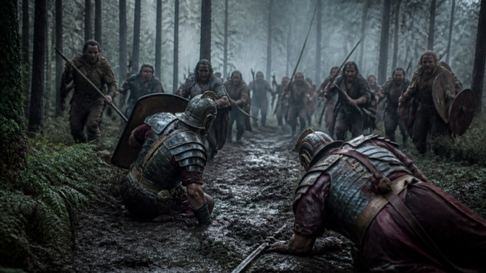
ROMA · GERMANIA · 9 DCCómo Arminio destruyó tres legiones romanas en el bosque de Teutoburgo en el año 9 d.C. y frenó para siempre la expansión de Roma en Germania.
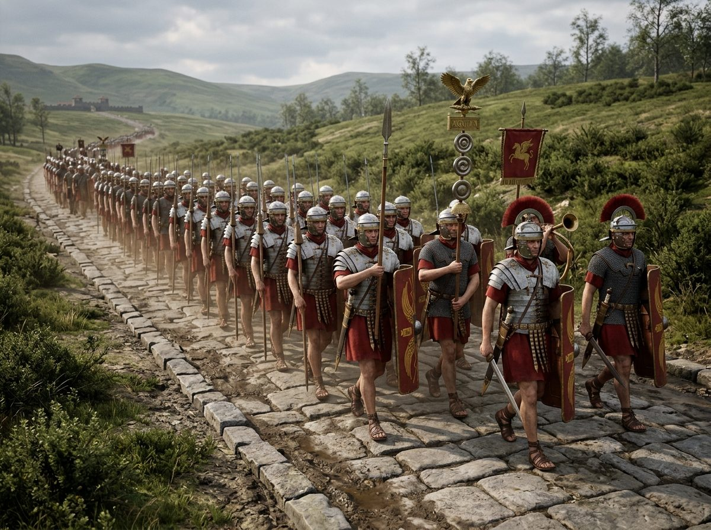
ROMA · EJÉRCITOArmamento, organización y táctica de las legiones romanas: cómo se entrenaba y equipaba la máquina de guerra que sostuvo ocho siglos de poder romano.
 ROMA · INGENIERÍA DE GUERRA
ROMA · INGENIERÍA DE GUERRASi las legiones romanas eran la fuerza que conquistaba los campos de batalla abiertos, la maquinaria de guerra romana era la que doblegaba las ciudades…
 HISPANIA · INGENIERÍA
HISPANIA · INGENIERÍACómo los romanos levantaron 728 metros de arcos de granito a 28 metros de altura sin argamasa en las juntas, y por qué sigue en pie 19 siglos después.
 GRECIA · TÁCTICA
GRECIA · TÁCTICAQué era la falange macedonia, cómo se organizaba y qué armas usaba: la formación militar con la que Filipo II y Alejandro Magno dominaron el Mediterráneo.
 HISPANIA · CIUDAD IMPERIAL
HISPANIA · CIUDAD IMPERIALEn 206 aC, Escipión instaló a sus veteranos heridos en una colina de Hispania. Dos siglos después, esa colonia había parido a dos emperadores de Roma: Trajano y Adriano.
 PERSIA · DARÍO III
PERSIA · DARÍO IIIEn el otoño del año 331 antes de Cristo, en una llanura polvororienta cerca del pueblo mesopotámico de Gaugamela, el destino del mundo conocido quedó…
 POMPEYA · 79 DC
POMPEYA · 79 DCHora a hora, la erupción del Vesubio del 79 d.C.: cómo murió Pompeya, el testimonio de Plinio el Joven y lo que la arqueología moderna sigue revelando.
 POMPEYA · VIDA COTIDIANA
POMPEYA · VIDA COTIDIANASi la primera historia de Pompeya es una historia de muerte y destrucción, la segunda —y quizás la más importante— es una historia de vida…
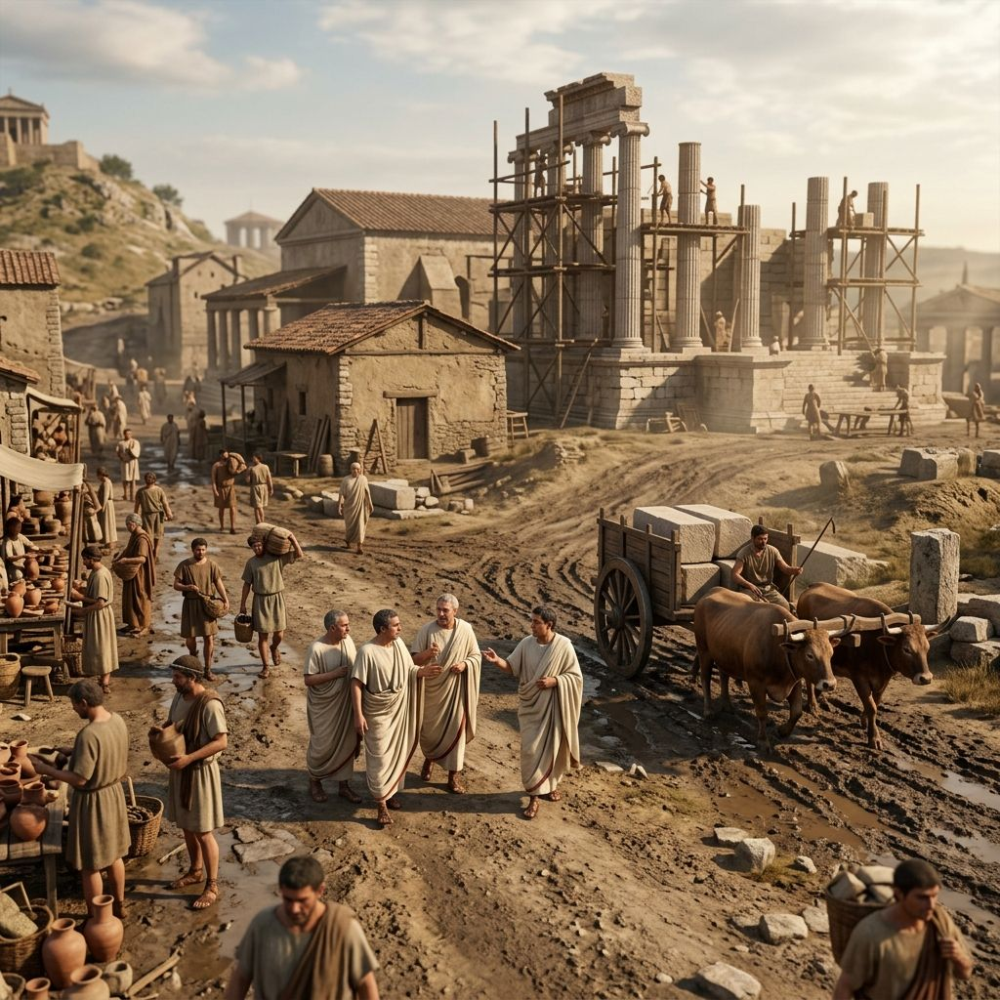
ROMA · ORÍGENESEn el año 753 antes de Cristo —según la tradición romana establecida por el anticuario Marco Terencio Varrón en el siglo I a.C.— Rómulo mató a su hermano…
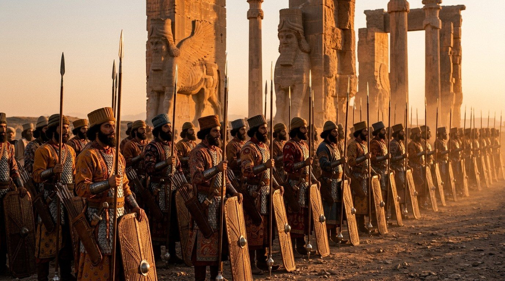
PERSIA · ÉLITE MILITARDe entre todos los cuerpos militares de élite de la Antigüedad, ninguno tiene un nombre más evocador ni más perfectamente calculado para inspirar terror y…
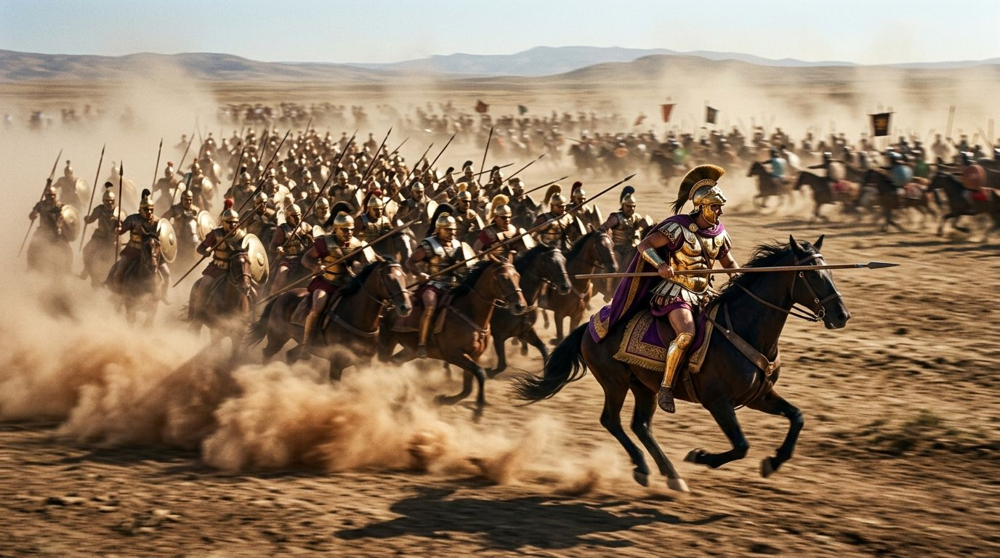
PERSIA · BATALLAEn la primavera del año 334 antes de Cristo, un ejército de cuarenta y cuatro mil hombres cruzó el estrecho del Helesponto desde Europa hacia Asia. Al frente…
 PERSIA · BATALLA
PERSIA · BATALLAEn noviembre del año 333 antes de Cristo, en el estrecho paso costero entre las montañas del Tauro y el mar Mediterráneo, tuvo lugar el primer encuentro…
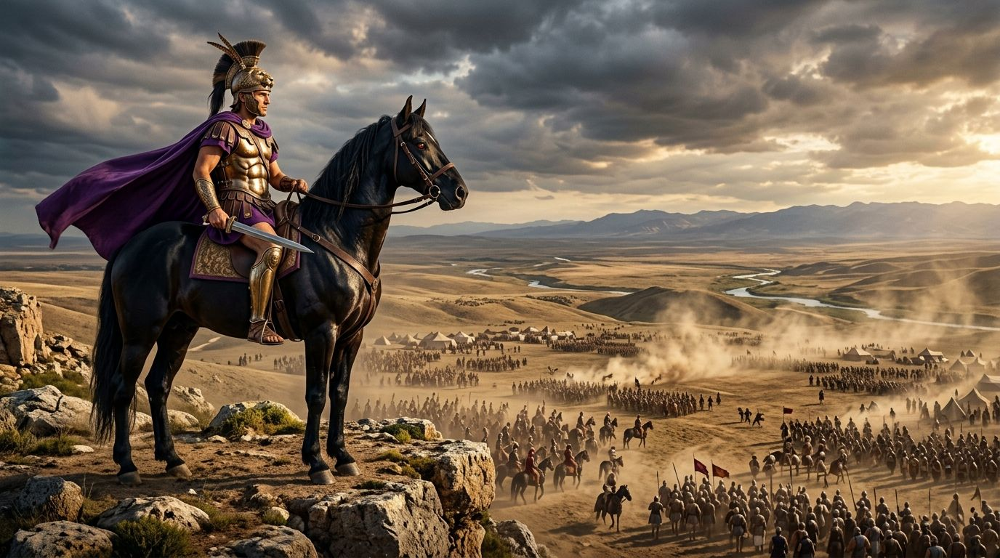
PERSIA · BATALLALa batalla de Gaugamela, en la llanura donde Alejandro Magno venció a Darío III: la estrategia que decidió el fin del Imperio Persa aqueménida.
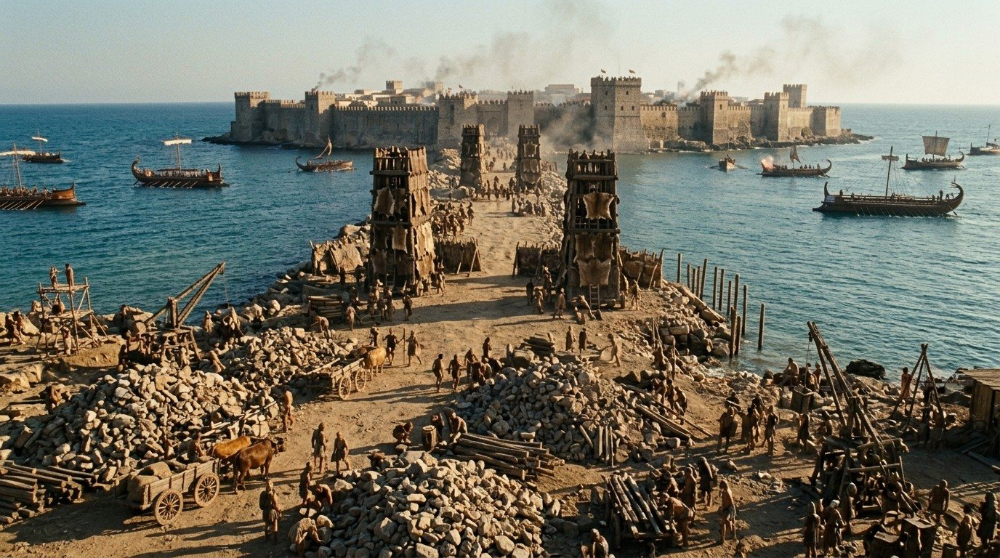
ALEJANDRO · ASEDIOTras la victoria en Issos en noviembre del 333 a.C., Alejandro Magno se encontró ante una encrucijada estratégica. Podría haber perseguido a Darío hacia el…
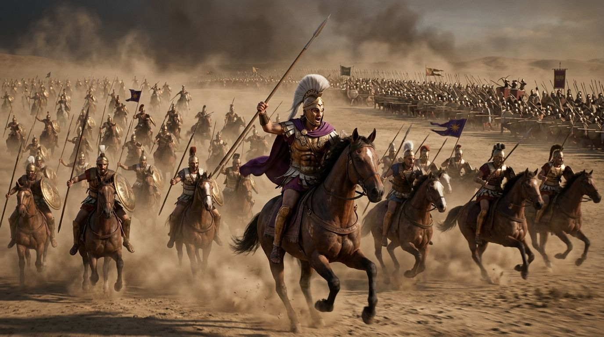
PERSIA · PERSÉPOLISEn la primavera del año 330 antes de Cristo, los palacios de Persépolis —la capital ceremonial del Imperio Aqueménida, construida durante generaciones por…
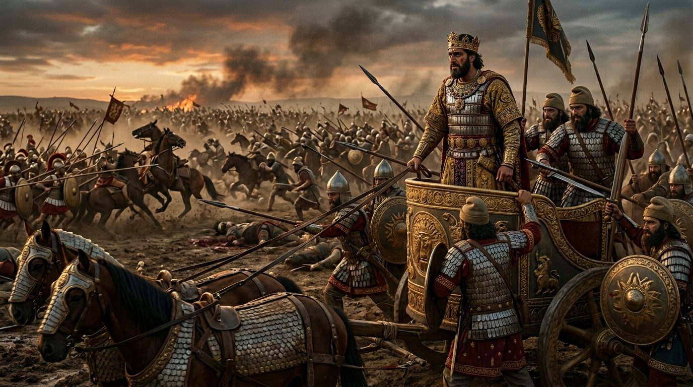
PERSIA · DARÍO IIIEn el verano del año 330 antes de Cristo, en algún punto del camino entre Ecbatana y Bactriana, el hombre que había sido el Gran Rey del mayor Imperio del…
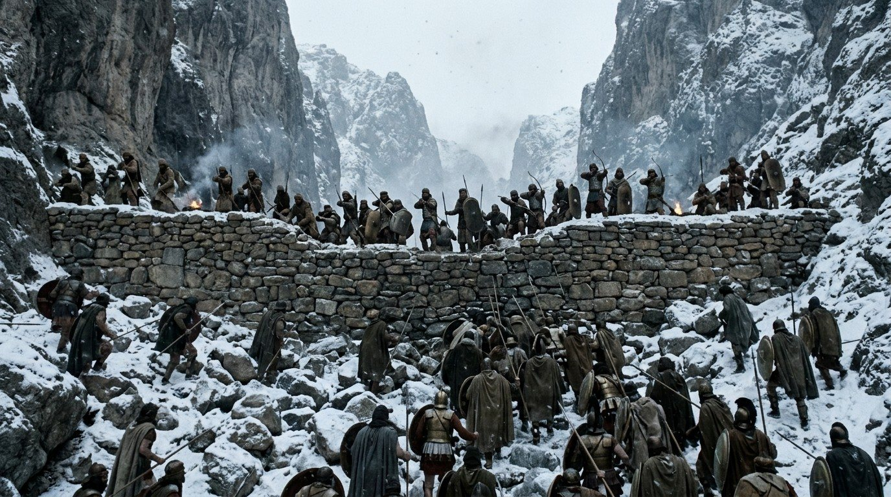
PERSIA · BATALLAEn los libros de historia sobre la campaña de Alejandro Magno, hay un episodio que a menudo queda eclipsado por las grandes victorias del macedónico: la…
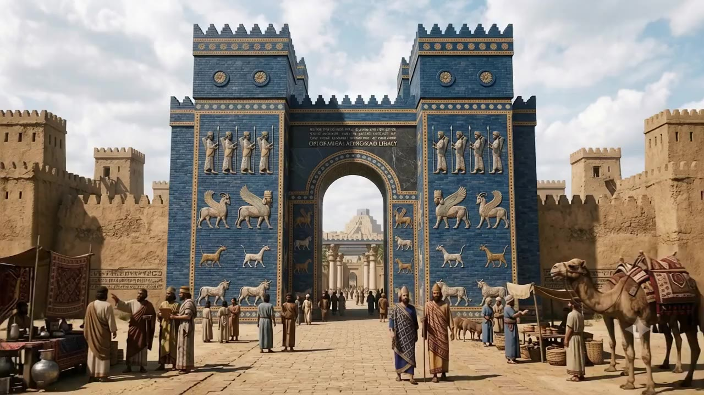
PERSIA · LEGADOCuando Alejandro Magno conquistó el Imperio Persa, no simplemente destruyó una estructura política y la reemplazó con otra. Heredó una de las…
 ROMA · CARTAGO
ROMA · CARTAGOResumen de las Guerras Púnicas: entre el 264 y el 146 a.C., Roma y Cartago libraron tres guerras por el dominio del Mediterráneo occidental. Así terminaron.
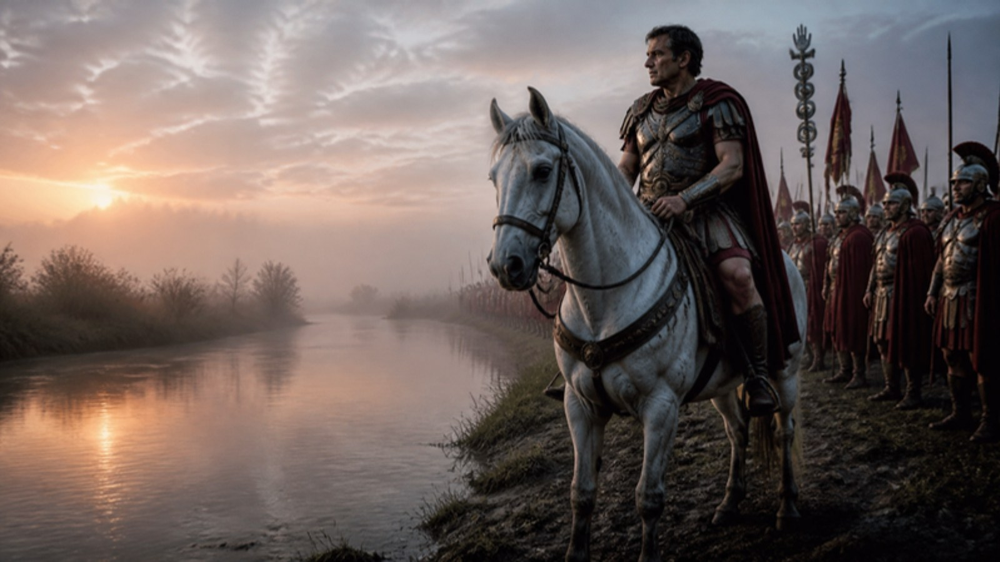
ROMA · CÉSAREl cruce del Rubicón: por qué esa decisión de Julio César selló el fin de la República Romana y el inicio de una nueva era imperial.
 ROMA · AUGUSTO
ROMA · AUGUSTOCuando Cayo Octavio llegó a Roma en el 44 a.C. para reclamar su herencia como sobrino nieto y heredero adoptivo de Julio César —el joven de diecinueve años…
 ROMA · POLÍTICA
ROMA · POLÍTICAEl año 69 después de Cristo es conocido en la historia como el
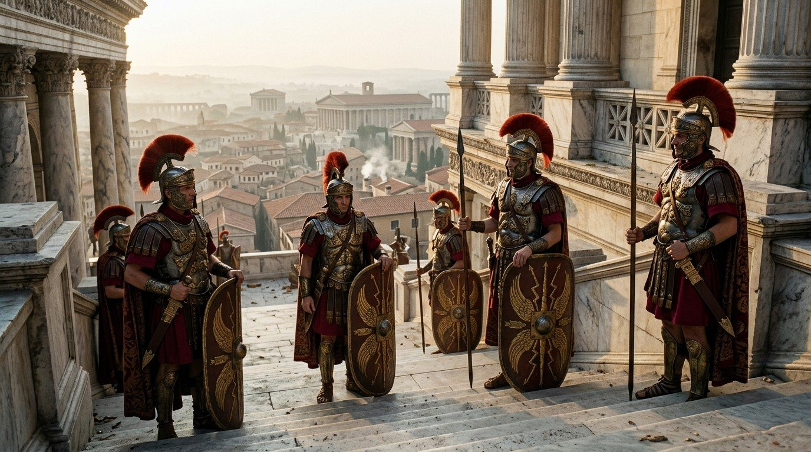
ROMA · GUARDIA IMPERIALEn el año 41 después de Cristo, el día después de que un grupo de guardias pretorianos asesinara al emperador Calígula en los corredores del palacio…
 ROMA · SIGLO III
ROMA · SIGLO IIIEntre los años 235 y 284 después de Cristo, el Imperio Romano experimentó la crisis más grave de su historia hasta ese momento: un período de cincuenta años…
 ROMA · COLISEO
ROMA · COLISEOCómo se construyó el Coliseo romano, quiénes eran realmente los gladiadores y por qué los juegos eran la herramienta política más poderosa de la Roma imperial.
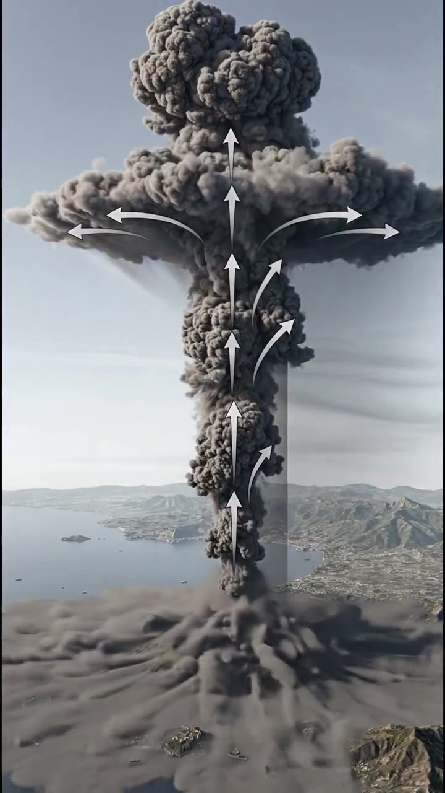
VESUBIO · VULCANOLOGÍADurante siglos, la destrucción de Pompeya se contó como una historia de castigo o de mala suerte. Pero desde finales del siglo XX, la vulcanología ha…
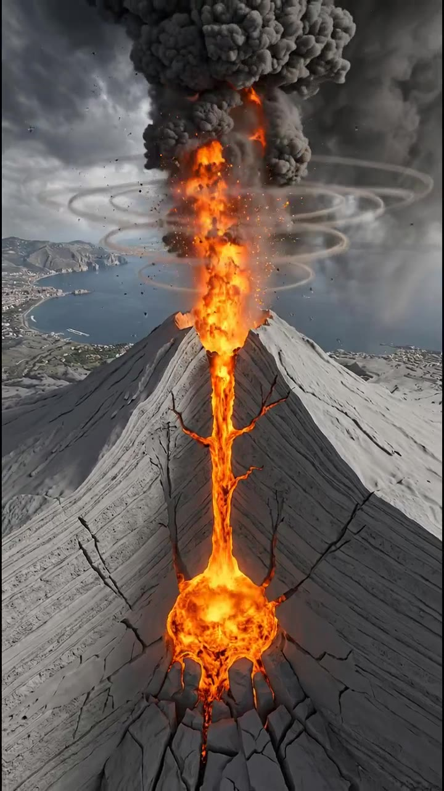
POMPEYA · DATOSDetrás de cada relato sobre Pompeya hay un conjunto de datos que la arqueología y la vulcanología han ido afinando durante más de dos siglos de excavaciones.…
 GUÍA · ROMA
GUÍA · ROMADe la fundación de Roma a la crisis del siglo III: guía completa del Imperio Romano, sus guerras, emperadores y legado, con artículos en profundidad.
Del Gránico a Persépolis: guía completa de la conquista de Persia por Alejandro Magno, las batallas clave contra Darío III y el legado del Imperio Aqueménida.
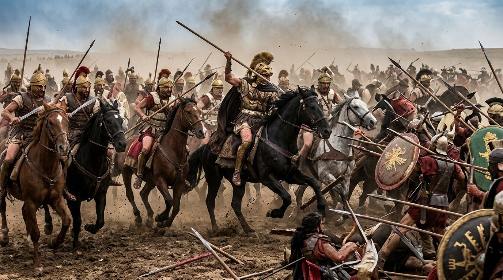
PODCAST · EP. 1En el siglo VI antes de Cristo, en las áridas mesetas del Irán actual, un pueblo llamado los persas emprendió una conquista sin precedentes en la historia de…
 PODCAST · EP. 2
PODCAST · EP. 2En la primavera del año 334 antes de Cristo, Alejandro III de Macedonia tenía veintidós años y heredaba el ejército más perfecto que Grecia había producido…
Episodio 3 del podcast Memorias del Pasado, en audio: la batalla de Gaugamela contada como relato narrado, con la caída del Imperio Persa ante Alejandro Magno.
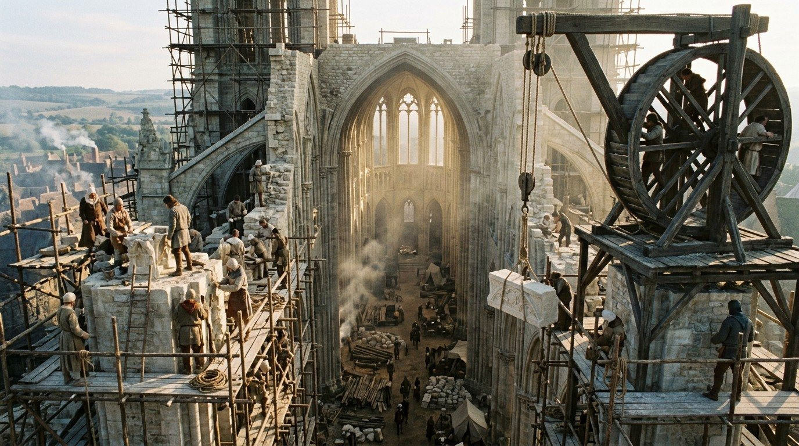
ARQUITECTURA MEDIEVALHistoria y arquitectura de las catedrales góticas: cómo nació el estilo en la abadía de Saint-Denis y por qué sus catedrales siguen desafiando la gravedad.